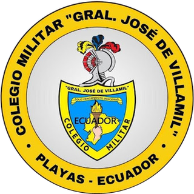
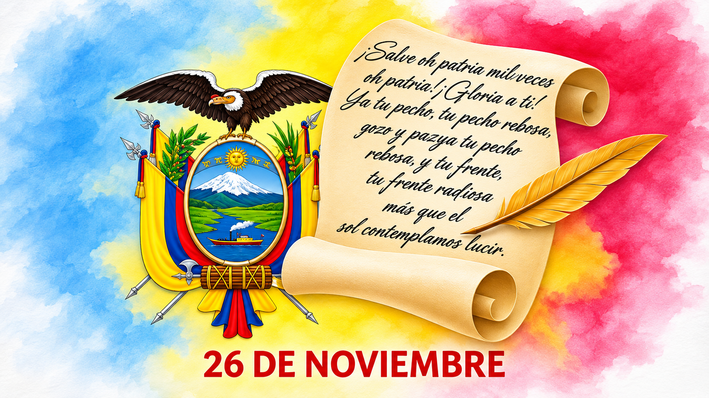
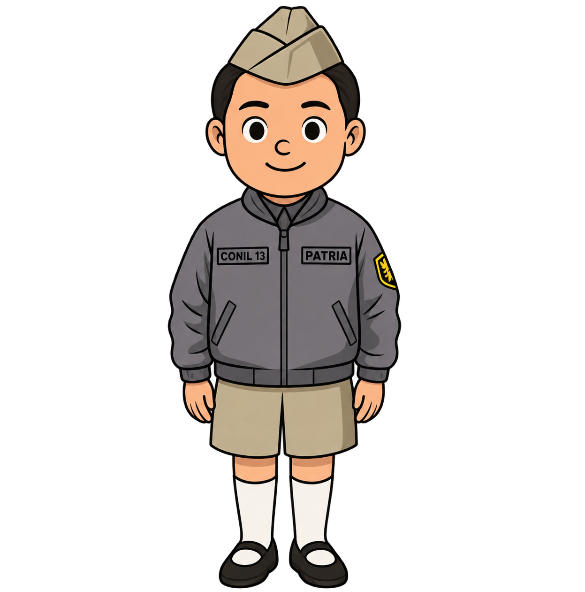
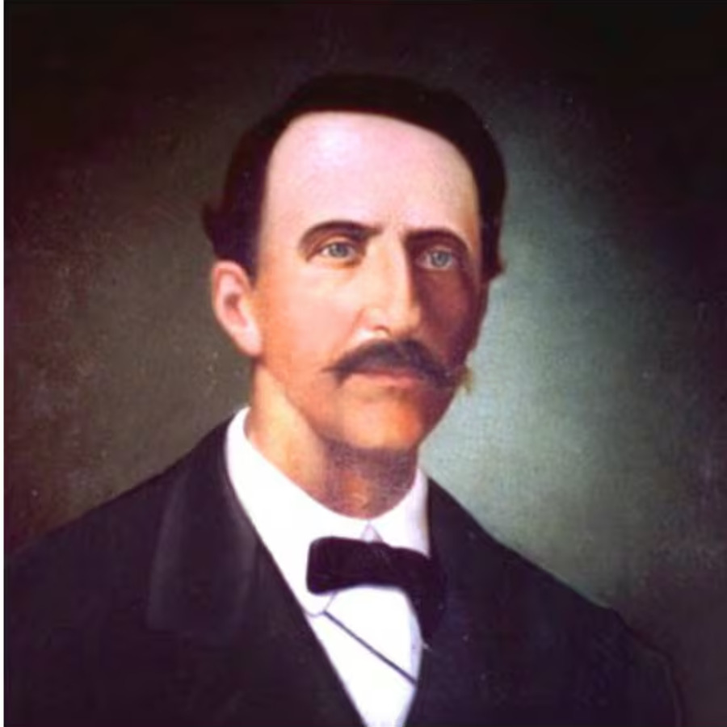
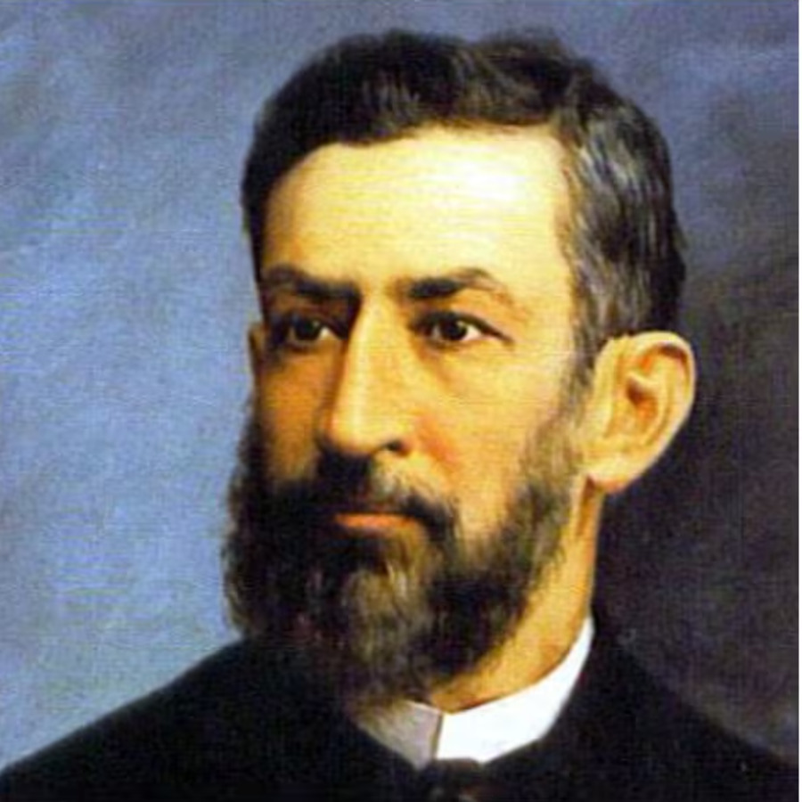

Nace la República
El nuevo Estado ecuatoriano necesita símbolos capaces de unir a una población diversa.

A continuación, recorre su historia con el cadete Inti.

Selecciona un círculo. El cadete avanzará contigo.

El nuevo Estado ecuatoriano necesita símbolos capaces de unir a una población diversa.
José Joaquín de Olmedo escribe una canción nacional por encargo de Juan José Flores. No llega a consolidarse.
Juan León Mera redacta el texto que será aprobado por el Congreso.
Antonio Neumane recibe la letra y crea una composición de carácter solemne y marcial.
El Estado oficializa el Himno Nacional y fija su carácter como símbolo patrio.
Se establece esta fecha para conmemorar cada año el Día del Himno Nacional.
Selecciona un retrato.


Selecciona las palabras resaltadas para descubrir su sentido.
El himno también se expresa en kichwa.
“¡Salve, oh Patria, mil veces!”
Homenaje, orgullo y paz.
“Alli shamui, yapakunta llakta!”
Diversidad cultural del Ecuador.
Como cadetes, entonamos el Himno Nacional con respeto y orgullo. Cada palabra expresa nuestro compromiso con la Patria.
“Alli shamui, yapakunta llakta. Kawsachun Ecuador!”«Salve, Patria mil veces. ¡Que viva el Ecuador!» Nuestra diversidad cultural también fortalece la identidad nacional.
Completa la frase: “Honro al Ecuador cuando...”
El Himno Nacional no solo se canta: se comprende, se respeta y se vive con acciones que fortalecen al Ecuador.